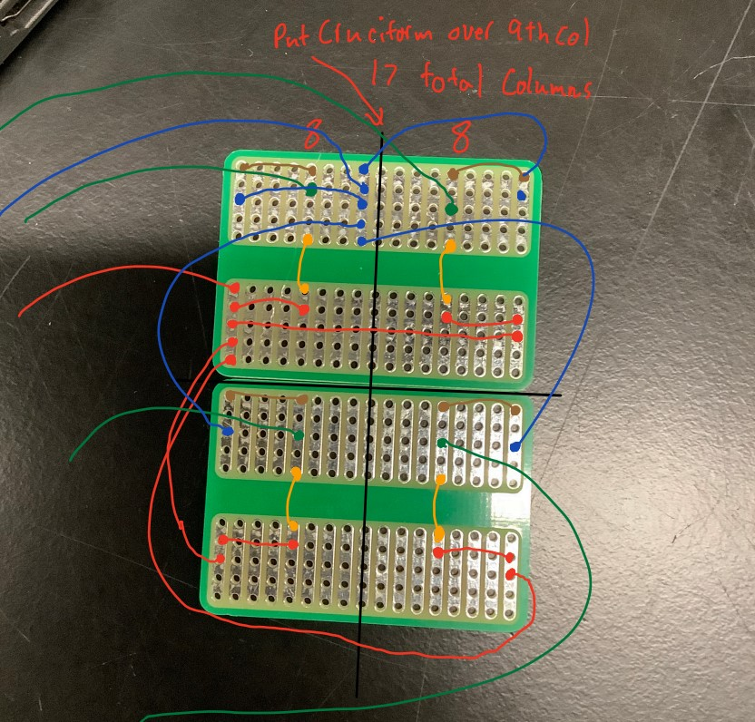

### Week 6: Using CAD to explore reflector designs and Building the Solar Tracker Circuit
### Monday - 10/17: CAD Explorations of Reflector Design
This week we worked on understanding the ways in which we want to focus the sunlight and how this might affect
the design of our reflector mirrors in relation to the salt brick. We first went through a CAD tutorial
on how to CAD a wedge that was responsive to changes in the positioning of a focal point. Through the use of various
lines and constraints in a sketch, we are able to design a wedge that changes in height when the position of the focal point moves.
This allows us to visualize and understand more precisely how we might focus sunlight. For example, something we realized
through looking at the the CAD was that depending on the relative height and spacing of mirror wedges, we could have one mirror potentially blocking
the light reflected from another mirror. As a result, we would not be getting the maximum amount of sunlight we could be otherwise.
As this was my first time using CAD software, a lot of the process was exploring how to use the different tools and set up sketches and lines
in CAD.
### Wednesday - 10/19: Testing and Building Solar Tracker Circuit
During this class, we split into two different groups. One group focused on trying to test the emissivity or reflectivity of
different materials. The group I was a part of worked on assembling the solar tracker from the previous week. A few immiediate improvements we
noted that could have been made included having cleaner wire management, cutting soldered wires shorter so that the PCB can be stuck onto the laser cut holder,
and leaving longer lengths of wire with more slack so that we had flexibility of where to place the PCB and Arduino board.
During our tests, we found that the readings of the 4 photoresistors were all very high (1024), the maximum value, indicating
that we had a short in our circuit. We tried to unsolder some parts of the circuit and fix the short but because the PCB had a lot of solder
stuck to the back, we were unable to fix the short. At the end, we decided on trying to restart and design a new PCB set up using two boards,
giving us a bit more space and leeway when it came to placing and soldering parts.
Here is the PCB setup designed by Tyler:

### Goals for Next Week:
1. Testing out modified PCB design
2. Continue CADing possible designs for Solar Reflector